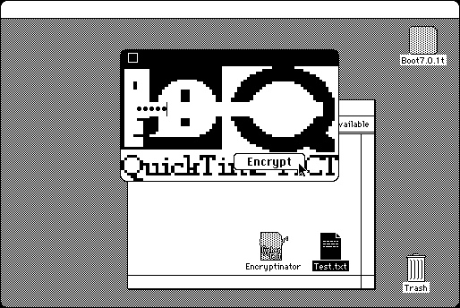

Download
Encryptinator.zip (20K) Encryptinator v1.00 repackaged into a zipped hfs disk image and checksum file. The disk image can be mounted with Mini vMac.
Encryptinator.hqx (33K) Encryptinator v1.00 in the original format.
copyright: Orion Lawlor
mod date: ?, 1996
license: Freeware
official url :
Orion Lawlor’s Programs for the Mac
A simple encryption program. The password dialog doesn't draw correctly without quicktime, but otherwise the program seems to work. Requires System 7. Partial source code is available (below).

Download Partial Source
encryption.cpp (4K) Encryptinator partial C source.
If you find these downloads useful, please consider helping the Gryphel Project, which hosts them.
Here are the md5 checksums for the downloads, signed with Gryphel Key 5:
--------- GRY SIGNED TEXT --------- 47b1d4fb3d5a1276b3f12e146f2ef9f5 Encryptinator.zip 606c56ae3308d006bb64c020c714255c Encryptinator.hqx 9bc469b83d5f82a7093ad41800480707 encryption.cpp ------- BEGIN GRY SIGNATURE ------- Gry/4Xa8CFcUzxdN/D7j4rP9CfBIzgTd2yriDcuUqMycqfafgzQiFudCXPK6sWbg XXE6odSrh9tXHA4dq1Ml2cyMbcZIOeGwcvv0A0/Qzo80pisVSFUwn6ctNebkdT2W hP9BoqeWtwR3JHUvrIR8mB8aDa7h98aufWb/TzDgKsigmFggLGPATY24uuARuGZu -------- END GRY SIGNATURE --------